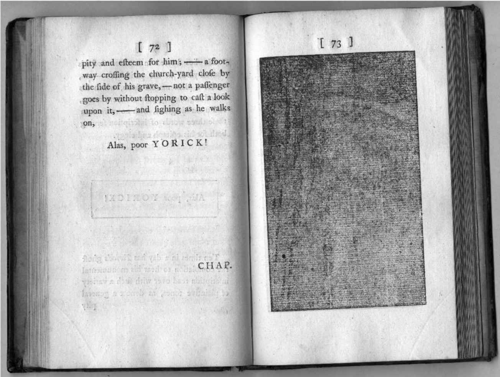

“1910年11月左右，人性变了，”弗吉尼亚·伍尔夫在她的随笔《贝内特先生和布朗太太》（1924）中写道，“所有的人际关系都发生了变化，并且就在人际关系变化的同时，宗教、品德、政治和文学也跟着转变了。”阿诺德·贝内特创作的现实主义小说记录了爱德华时代的地方生活，但是包含了太多杂乱的内容。他把注意力更多地投向家具陈设，而不是人物的内心活动。因此，伍尔夫提出：要想创造一个“鲜活的布朗夫人”，你必须抛弃外在事物，关注内心世界的复杂性和不连贯性——这正是西格蒙德·弗洛伊德带给现代人的建议。
某种意义上，伍尔夫虚构的布朗夫人回应了詹姆斯·乔伊斯在《尤利西斯》中塑造的布鲁姆夫妇，虽然伍尔夫出于中上层阶级的审美趣味，并不赞成乔伊斯所使用的粗俗语言以及他对于身体机能的过度描写。对于崇尚文雅品味的伍尔夫来说，乔伊斯的作品过于鲜活。但是在一篇论“现代小说”的随笔中（这篇文章的发表时间在《都柏林人》出版之后，《尤利西斯》出版之前），伍尔夫称赞乔伊斯善于捕捉瞬间：“让我们在那些细微事物坠入心田的时候，按照它们落下的顺序将其逐一记录。不管表面看起来多么不连贯、不一致，每个景象或事件都在我们的意识中留下印记，我们要做的就是追踪这一模式。”在伍尔夫看来，现代作家的任务就是捕捉“存在的瞬间”，所以她才提出那个风趣的说法，将现代性的开端设定在一个特定的时刻，大致上就是那位古板的老国王爱德华七世去世的时间。
作为居住在萨塞克斯郡的美国人，亨利·詹姆斯在他创作于爱德华时代的小说中，完善了简·奥斯丁的叙事艺术，那就是通过第三人称的叙事声音来表达第一人称的内心想法，借助这一技巧将人物的内在方面和外在方面同时呈现出来，从而以前所未有的方式，将带有同情心的认同效果与反讽性的疏离效果融为一体。在詹姆斯的随笔《小说艺术》（1884）中，有一个关键的句子以现代主义的形式来描写内心世界：
从这句话不难看出，在弗吉尼亚·伍尔夫发表意识流小说宣言之前，詹姆斯已经有了类似的想法，《尤利西斯》就是这类作品的杰出代表。
1983年，心灵哲学家丹尼尔·丹尼特在一次关于意识的研讨会上宣读了一篇论文。他提出，人的自我不是别的，就是大脑中的“叙事重心”。在《解释意识》（1991）中，丹尼特进一步发展了这一观点。某种意义上，每个人都是小说家。“我们的故事都是编出来的，但是很大程度上并不是我们创造了这些故事，而是这些故事造就了我们，”丹尼特写道，“我们的人类意识以及我们的叙事自我都是这些故事的产物，而不是源头。”他把这一看法称为关于意识的“多重草稿”理论，这听起来很像是一种文学理念。
另一位研究意识的神经生理学家安东尼奥·达马西奥在《笛卡尔的错误》（1994）和《感知当下》（2001）这两部专著中指出，从神经学研究的视角来看，理性和激情、认知和情感之间的区分——这种对立关系可以追溯到亚里士多德——是一种谬论。且不论这一点是好是坏，达马西奥和他的同事们已经证明，情感是推理和决策过程中不可或缺的一部分。在启蒙运动时期，勒内·笛卡尔提出心灵能够脱离身体而存在，这同样是一种谬论：心灵只有借助身体才能产生意识，身体是情感的剧场——最明显的例子是脸红和勃起（这两个现象让约翰·济慈和詹姆斯·乔伊斯为之着迷）。并且，认知活动具有图式结构，而图式结构本身源自身体经验。大脑和电脑有所不同，因为电脑没有身体。我们不仅可以从21世纪早期脑科学家所做的实证研究中推断出上述看法，而且也可以从20世纪早期小说家的作品中得到同样的结论。
“随着意识流在时间序列中向前推进，出现在意识流之中的自我也在不断发生变化，即便感觉告诉我们，在我们持续存在的过程中，自我始终保持不变”：这是达马西奥对于威廉·詹姆斯的重新诠释，后者注意到意识的一个内在悖论。为了化解这一悖论，达马西奥提出要区分“核心自我”和更高层次的“自传性自我”。在神经解剖学层面上，这一区分有理可据。在一些医学案例中，脑损伤彻底抹去了“自传性自我”所具备的知识，但核心自我依然能正常运作正是威廉·詹姆斯创造出了意识流这个术语：在某种程度上，他预见了达马西奥提出的大脑、身体和情感之间相互依赖的看法，正如他的兄弟亨利·詹姆斯以前所未有的严谨态度来回应小说家如何再现意识的问题。
意识随着时间的推移而流动，这一意象对于自觉的小说家来说提出了一个关键问题：你如何在叙事中再现时间？乔伊斯的做法是将《尤利西斯》的戏仿性史诗叙事设定在一天之内完成：
弗吉尼亚·伍尔夫在《奥兰多》（1928）中做了另一种尝试，这是以她的朋友和恋人维塔·萨克维尔–韦斯特为原型的幻想故事，一方面可以视作20世纪晚期虚构性的“魔幻现实主义”的先驱，另一方面也是一部有趣的“英格兰文学导读”。
奥兰多原本是伊丽莎白时代的贵族，基因里带有一点“肯特郡或者萨塞克斯郡”的乡土气息。他与莎士比亚相识，曾经从事悲剧创作，他的作品充斥着可怕的情节，同时又表现出高贵的情操。17世纪时，他专心研究“托马斯·布朗爵士的奇思妙想”。王政复辟后，也就是说（根据伍尔夫的说法）当阿芙拉·贝恩成为第一位女性职业作家时，奥兰多摇身一变，成了女人。到了18世纪，他跻身上流社会，但是同伴的平庸思想令他感到厌烦。19世纪时，气候发生了变化。到处都是湿气：
奥兰多甚至熬过了寒冷的维多利亚时代。这部作品以她的当代生活、她的当前瞬间作为结尾。钟声响起，她试图抓住构成意识的那些印象片段：
她成了弗吉尼亚·伍尔夫小说中的一个人物。
虚构作品和标榜“真人真事”的旅行叙事以及18世纪的罪犯传记之间的密切联系促使伍尔夫注意到小说和传记（她更喜欢称之为“人生故事”）之间的相似性。从《汤姆·琼斯》到《大卫·科波菲尔》，从D.H.劳伦斯的《儿子和情人》（1913）到乔伊斯的《青年艺术家的肖像》（1916），小说常常以传记形式来描写主角从成长走向成熟的人生经历。许多小说以某个人物的“一生”或“历史”作为书名，有时候这个人物就是作者本人的写照。奥兰多的永生和性别转变戏仿了从摇篮到坟墓的叙事结构，这样的结构可能导致小说和传记失去活力。伍尔夫对普遍接受的小说惯例提出挑战，正如她的朋友利顿·斯特雷奇在《名人传》（1918）中挑战了人生故事的写法。她快乐地想象出一个生活了好几个世纪的男（女）主角，因为她知道试图在小说中逼真地呈现时间是一种荒谬的做法，理查森的帕米拉和克拉丽莎早就给读者留下了这样的印象：作者花费了更多时间来描写他们的经历，而不是让读者直接体验他们的感受。
从一开始，英格兰小说对于不可靠叙述的兴趣就不亚于叙事声音的本真性。帕米拉是真的像她表现出的那样品德高尚，还是在利用自己的性感来引诱B先生和她结婚，从而确保她和家人能够提升社会地位，获得经济保障？后一种说法正是亨利·菲尔丁在他的戏仿作品《莎米拉》（1741）中对于理查森作品的解读。更为微妙同时也更为隐蔽的问题是，我们究竟在多大程度上能够相信伊恩·麦克尤恩《赎罪》（2001）中的女主角布里奥妮·塔利斯的叙事意识？
《奥兰多》的序言以传记作品中常见的那一类义务性的致谢作为开头，但是又不同于常规套路：
就时间、意识和小说等主题而言，上述作家中最具启发性的名字是斯特恩。
不妨考虑一下自传所引出的问题。我花在自传写作上的每一秒都让我的人生又增加了一秒，那么我的叙事怎么可能跟得上我的人生进度，让我完整地讲述我的故事？完整的传记、自传或小说会努力捕捉印刻在主人公头脑中的每一个瞬间，并且将这一瞬间与其他时刻联系起来，从而创造出他们的故事，他们的自我。但是，叙事作品能够记录的只不过是这些素材中很小的一部分。人生故事应该从哪里开始？出生，还是受孕？或者应该解释一下受孕的背景情况？假设某人在周日晚上习惯做两件事，一件事是给钟上弦，另一件事是和妻子做爱。假设某个周日晚上在他做第二件事的时候，他突然意识到自己忘了做第一件事，于是从某种程度上来说，他没有彻底完成第二件事，但是也足以孕育一个孩子。受到这样的受孕时刻的影响，这个孩子将来会习惯性地无法完成任何事，更不用说将他自己的人生故事完整记录下来。
劳伦斯·斯特恩的《项狄传》（1759-1767）是在小说还没有正式诞生前，对于这一体裁的一次戏仿。这既是一部描写人性的小说，同时也是一部意识流小说。这部作品敏锐地意识到书籍作为交流媒介所具有的可能性和局限性。每个人对于美都有着自己的看法，因此如果你想要描写一位漂亮的女性，为什么不留下一页空白，让每个读者自行填补呢？如果某个深受喜爱的人物死了，我们应该停下来哀悼他们，为什么不让这本书在某一页上显示黑色来表示哀悼呢？

图10 《项狄传》中涂黑的书页，用来表示约里克之死
“稀奇古怪的事物只能流行一时，”约翰逊博士说，“《项狄传》不会长期流传。”这一次，他说错了：《项狄传》独特的写法让这部作品成为一种可再生资源，从中可以看到英格兰小说无与伦比的多样性。